Big CNC project
In this part I will go through how I do my big CNC project.
For this I will be making a table/high stool, the reason why I want to make this is because I want to have a small table to put some stuff on it, like a small PC or my water bottle because my table I am using now is really small, and it doesn't have the space to fit everything properly.
So now I will start the design of the table.
First I will be using fusion 360 and sketching out a circle.
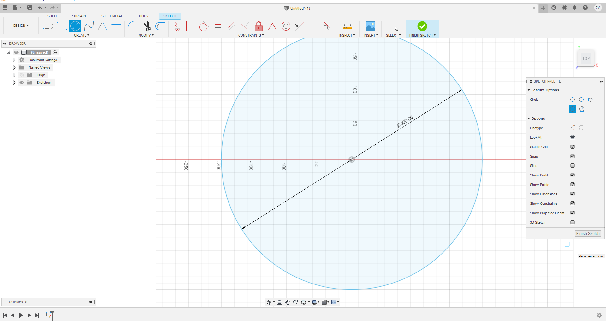After drawing out the circle, I extrude it by 18m, because the wood I am using is 18mm thick.
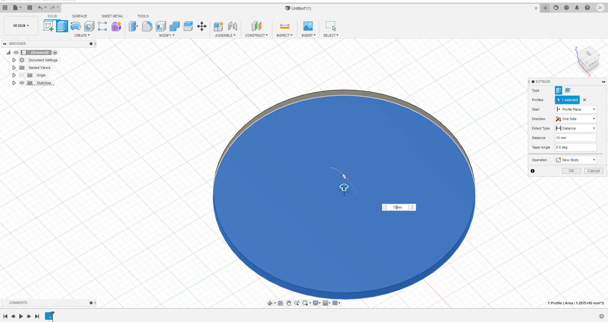Next we will need to sktech at the side of the top, I will be making it 45cm high, so I will draw a 45 cm line verically first, then drawing a line horizontally at the bottom.
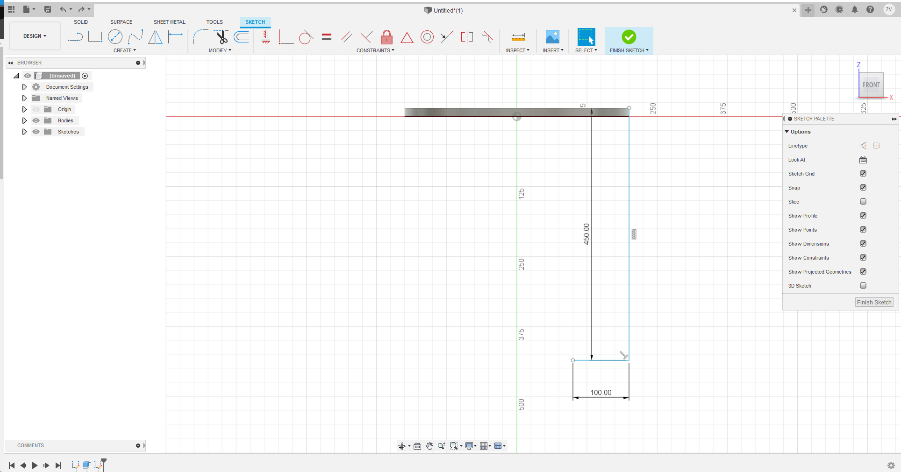Afterwards, I draw out the legs and the legs' tabs to be able to connect to the top.
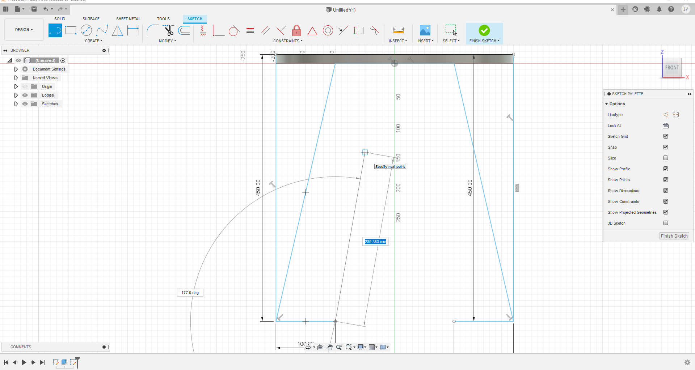Then I extruded the sketch symmetrically to a thickness of 18mm.
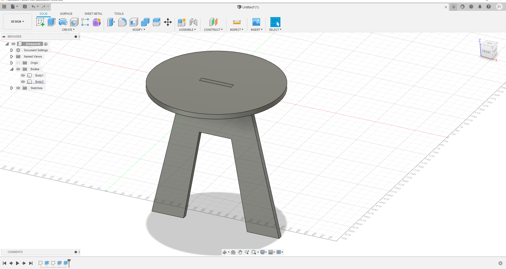Now I can just copy and paste the same leg and I now have the second leg, easy. I then just move it down to align the legs.
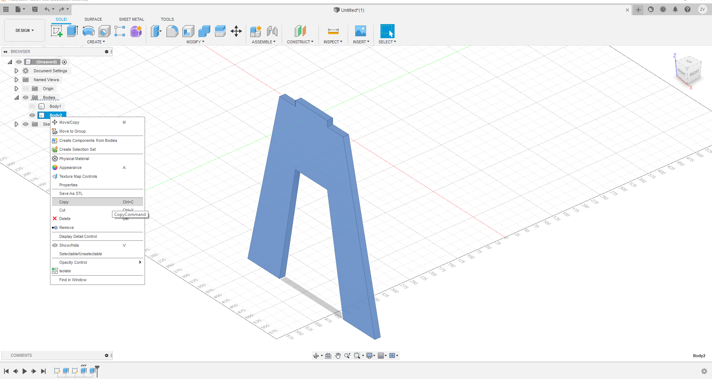 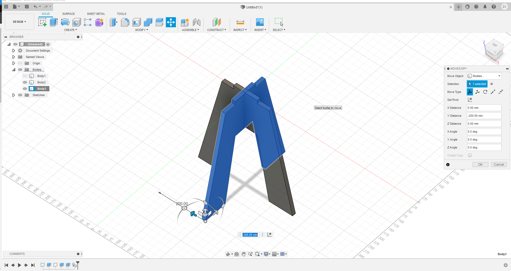Now I sketch out the slots for the legs to connect to the top and remove it.
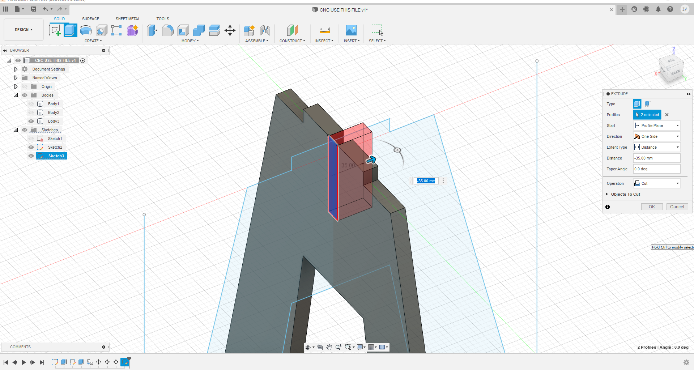 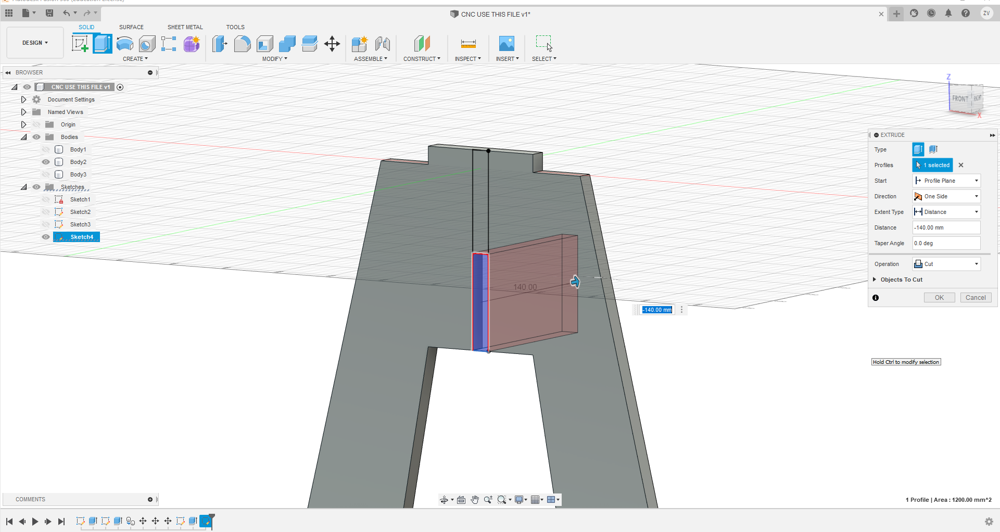 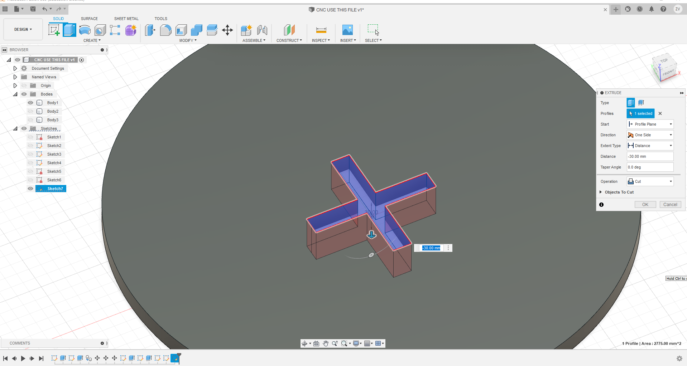Then we just save the parts' sketches and export the sketches as DXF and now we can go use vcarve to generate the toolpath.
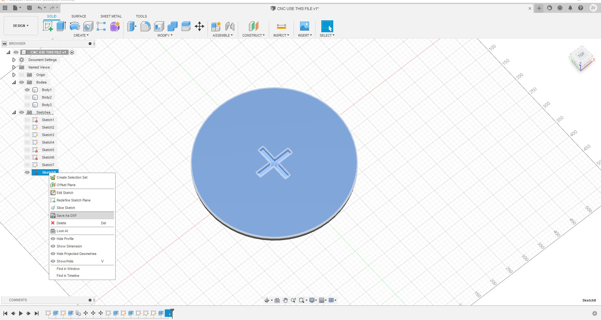Now in vcarve, you can generate the toolpath for it to cut out, how deep it must go and generate multiple paths, and also you add dog ears on the corners to ensure that it can cut all the way in.
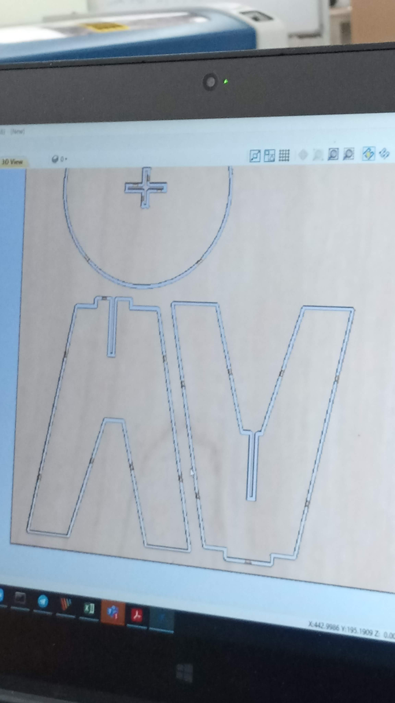And we can finally use the machine, the CNC machine is very large and dangerous, so it is important that when operating the machine, you need at least 2 people to watch it.
First if we want to change the wood on the bed, we will need to drill them down to ensure that it stays put.
And to control the machine, we use the controller magnetically attached onto the machine.
Just like the stepcraft machine, we will need to zero the axises and use a probe to set the z-axis. And dont forget to turn on the extractor.
Now we can start the machine to cut the parts out.
After cutting out the parts, we will need to push the parts out because when generating the toolpath, we created tabs to secure it in place, we will need to unscrew the board to push them out.
As you can see, the parts now are super furry, and has a lot of uneven areas, for that we will need to use a sander to sand the edges smooth.

Then we can test fit the parts and it works! Alright, we finished.

Looking at the finished product, what could be improved will be the offset of the chair leg, the jutting tabs from the legs, and the width of the slots, with all these improvements, it will look many times better and more like it was made by an expert.
You can get the toolpath code here: CNC toolpath